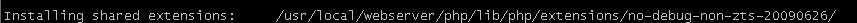

libevent是为了取代事件循环发现在事件驱动的网络服务器。一个应用程序只需要调用event_dispatch(),然后添加或删除事件动态而无需更改事件循环。 libevent 与memcached 的关系？ libevent 下载地址：https://github.com/downloads/libevent/libevent/libevent-2.0.21-stable.tar.gz
wget https://github.com/downloads/libevent/libevent/libevent-2.0.21-stable.tar.gz tar zxvf libevent-2.0.21-stable.tar.gz cd libevent-2.0.21-stable ./configure --prefix=/usr make&make install
ls -al /usr/lib | grep libevent
wget http://memcached.googlecode.com/files/memcached-1.4.15.tar.gz tar zxvf memcached-1.4.15.tar.gz cd memcached-1.4.15 ./configure --with-libevent=/usr make && make install
wget http://pecl.php.net/get/memcache-2.2.7.tgz
tar vxzf memcache-2.2.7.tgz
cd memcache-2.2.7
/usr/local/webserver/php/bin/phpize
./configure --enable-memcache --with-php-config=/usr/local/webserver/php/bin/php-config
make&make install
/usr/local/webserver/php/lib/php/extensions/no-debug-non-zts-20090626/

extension_dir='/usr/local/webserver/php/lib/php/extensions/no-debug-non-zts-20090626/'
extension=memcache.so
#! /bin/sh
#
# chkconfig: - 55 45
# description: The memcached daemon is a network memory cache service.
# processname: memcached
# config: /etc/sysconfig/memcached
# Source function library.
. /etc/rc.d/init.d/functions
PORT=11211
USER=root
MAXCONN=1024
CACHESIZE=64
OPTIONS=""
PID="/tmp/memcached.pid"
HOST="127.0.0.1"
PREFIX=/usr/local/bin/memcached
if [ -f /etc/sysconfig/memcached ];then
. /etc/sysconfig/memcached
fi
# Check that networking is up.
if [ "$NETWORKING" = "no" ]
then
exit 0
fi
RETVAL=0
start () {
echo "Starting memcached ..."
# insure that /var/run/memcached has proper permissions
chown $USER $PREFIX
$PREFIX -d -l $HOST -p $PORT -u $USER -m $CACHESIZE -c $MAXCONN -P $PID $OPTIONS
RETVAL=$?
[ $RETVAL -eq 0 ] && touch /var/lock/subsys/memcached
}
stop () {
echo "Stopping memcached ..."
kill `cat /tmp/memcached.pid`
RETVAL=$?
if [ $RETVAL -eq 0 ] ; then
rm -f /var/lock/subsys/memcached
rm -f $PID
fi
}
restart () {
stop
start
}
# See how we were called.
case "$1" in
start)
start
;;
stop)
stop
;;
status)
status memcached
;;
restart|reload)
restart
;;
condrestart)
[ -f /var/lock/subsys/memcached ] && restart || :
;;
*)
echo $"Usage: $0 {start|stop|status|restart|reload|condrestart}"
exit 1
esac
exit $?
chkconfig --add memcached